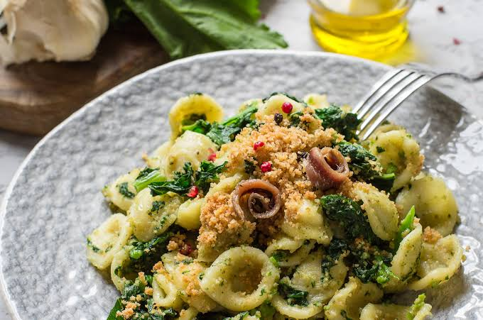
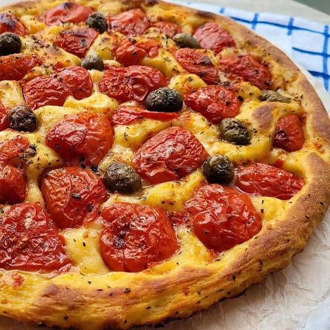
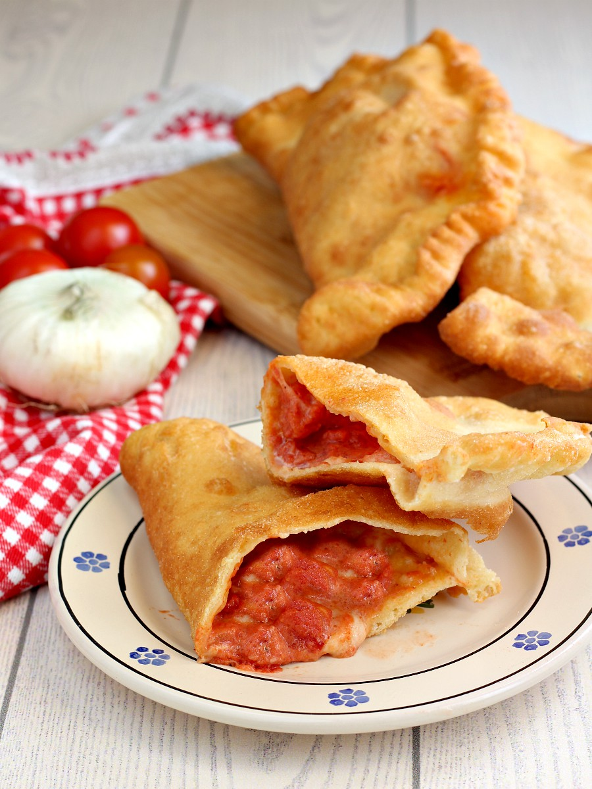

Orecchiette alle cime di rape

Orecchiette fatte in casa con cime di rape,pangrattato e acciughe

Orecchiette fatte in casa con cime di rape,pangrattato e acciughe

Focaccia barese con pomodori, olive e origano

Panzerotti fatti in casa con salsa di pomodoro e mozzarella